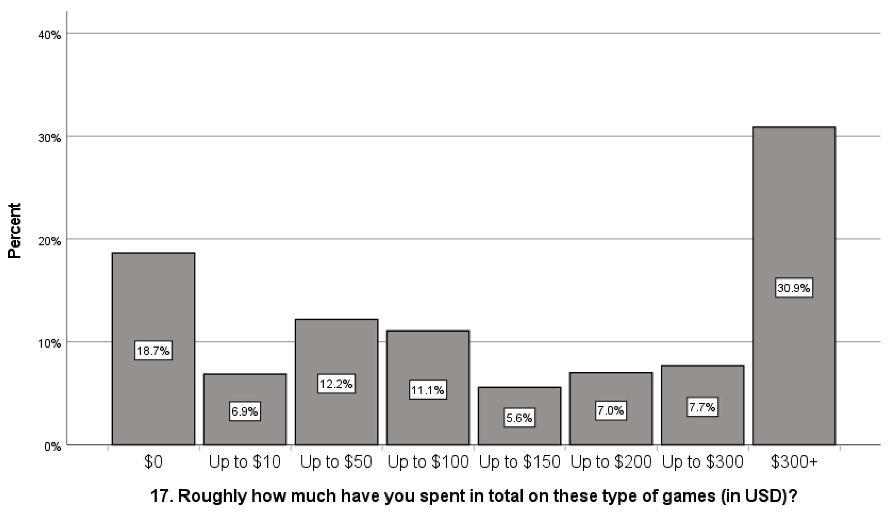

Ethical Issues
Appeal of Lottery Algorithms
As lottery algorithms can be highly profitable, companies and developers package them as appealing reward systems to accompany player experience in digital games.
Transparency
Lottery-based algorithms are often black boxes and not entirely transparent about their inner workings. Essentially, an algorithm could reduce the probabilities of their desired outcomes randomly or another condition without the player knowing. Without transparency, players may become fixated on interacting with the algorithm because they believe winning is always based on luck and probability. Even if companies directly state reward probabilities, they could also use player analytics against them in the algorithms’ design.
Financial Impacts
Many games allow in-game purchases to increase players’ chances at acquiring their desired reward. Lottery algorithms in games are often designed to be highly addictive, leading players to spend more money on acquiring chances quickly despite extremely low probabilities. Although F2P or free-to-play games provide methods for players to earn more chances, a player can still become addicted to grinding for lottery plays which may impact their career status.
Mental Health
Fixation on acquiring chances to engage with the lottery-based algorithms in digital games can lead to obsession with FOMO (fear of missing out) when seeing streamers, popular players, or friends collecting characters and items, constrained relationships as a result of changes in mental state, and anxiety while engaging with the algorithms as they are unpredictable from the player’s perspective.
Intended Design
There is also the issue of whether all developers design these algorithms to be addictive and predatory. When meant for use in digital games, they are typically designed for company profit, which begs the question of how these algorithms are designed with users in mind.
Gacha Player Spending Graph

Graph of 713 participants' response to total amount spent in USD.
Lakić, Nikola, et al. “Addiction and Spending in Gacha Games.” Information, vol. 14, no. 7, 13 July 2023, pp. 399, Source URL.